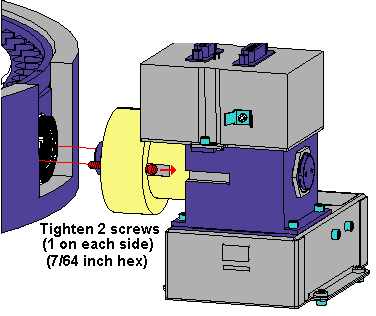
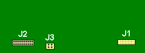
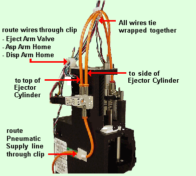
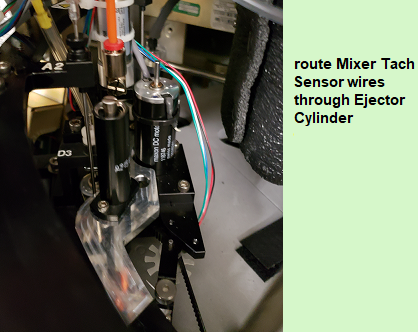
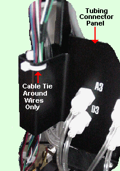
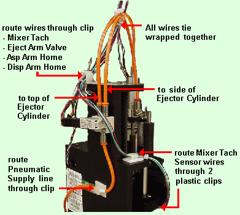
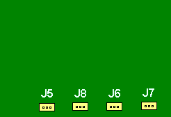

This procedure describes how to install the analytical module into a DxI instrument.
Warning: The photomultiplier tube (PMT) is a very sensitive photon measuring device. Any background or extraneous light coming into contact with a powered PMT can saturate the PMT and reduce the gain. This reduces the performance of the PMT, and it can take a long time for the PMT to recover or it might never recover fully. A magnetic field close to a powered PMT also reduces the performance of the PMT. The magnetic field causes the electrons to follow a curved path instead of moving in a straight line. When you are performing service in the area of the luminometer, observe the following rules.
Never shine a flashlight around the luminometer while the PMT is powered on.
Never bring a strong magnetic field close to the luminometer while the luminometer is powered on.
Before removing the covers on the analytical module, turn off the power to the PMT.
Cap the PMT whenever it is removed from the analytical module.
Warning: Potentially, the magnets in the analytical module are strong enough to interfere with medical devices, ferromagnetic implants, or loose metal objects in close proximity to the magnetic field. Consider the following:
Persons with medical devices or metal implants should not hold the wash arm side of the analytical module close to their body.
Consult your physician or your medical device manual for more information.
The magnetic field near the analytical module was measured:
Prepare the new analytical module for installation.
Note: If installing the same analytical module that has just been removed, then skip this step.
Remove the wash arm assembly from the removed analytical module and install it to the new analytical module. Refer to
AU: Replacing Wash Arm
procedure for more details.
If the new analytical module has the luminometer installed, then remove the luminometer from the module (two 7/64-inch hex screws).
Warning: Avoid exposing the luminometer lens to direct light. Cover the lens with a lens cap, if available.

Remove the analytical module cover.
Place all the loose wires on top of the incubator wheel.
Working from the rear of the instrument, place the analytical module into the instrument.
Verify that the instrument is powered off.
To provide more clearance while installing the analytical module, manually move the collet on the wash pick-and-place to the front of the instrument and the collet on the incubator pick-and-place to the right of the instrument.
With the wash arm facing the instrument, position the analytical module at the rear of the instrument.
Tip the rear of the analytical module up, so the wash arm fits under the substrate pump bracket as you guide the module into the instrument.
Caution: When installing the analytical module, do not snag any wires, cables, or tubing.
After the wash arm has cleared the substrate pump bracket, carefully tip the module into the upright position.
Turning the module clockwise, push it towards the front of the instrument to access the module for mounting the luminometer.
Working from the front of the instrument, install the analytical module.
Install the air supply line to the bottom of the eject plate selector valve.
Slide the wash arm toward the analytical module. Install and then tighten the two securing screws.
Connect the LED power cable to the LED connector located under the analytical module by the luminometer.
Install the luminometer onto the analytical module housing using the two bolts.
Connect the four cables to the luminometer.
Cables to the luminometer include:
Lumi Control (15-pin)
Signal Out (9-pin)
H. V. Control
Ground
Install the dispense probe plate and eject plate.
Note:
New dispense/eject plate has three 3/16-inch hex screws.
Old dispense/eject plate has one 5/32-inch button head hex screw and two 3/16-inch hex screws.
Install the aspirate probe plate (three 9/64-inch hex screws).
Caution: Verify that the aspirate probe plate is positioned beneath the bracket by the substrate probe.
Working from the rear of the instrument, install the analytical module.
Caution: To avoid damage, do not pinch any wires or tubes between the mounting plate on the analytical module and the base plate on the instrument.
Place the analytical module into position.
Insert, but do not tighten, the mounting bolt at the left side of the analytical module (near the wash pick-and-place tower mounting).
Install the analytical module bracket on the alignment pin, and tighten the bracket bolt.
Tighten the mounting bolt at the left side of the analytical module.
Install the snap bracket on the center rear cover. Refer to the alignment marks scribed into the base plate.
Route the cable bundle toward the screw side of the bracket.
Mount the connectors onto the analytical module interface PCB located on the rear of the analytical module.

J1 - Ribbon Cable
J2 - Analytical Module Motors Harness
J3 - Analytical Module Power Harness
Prepare the cables for installation of the AU.
Figure 57: Routing and securing wiring correctly
New Wash Arm Assembly



Old Wash Arm Assembly

Connect the thermistor connectors to the temperature interface PCB located on the base plate to the right of pipettor 4.
J2 - Incubator Temperature Thermistor
J3 - Wash Temperature Thermistor
Install the temperature interface PCB cover.
Route the mixer motor and the mixer arm eject sensor cables through the metal channel close to the tubing connector panel. Connect the cables to the upper analytical module interface PCB.
Caution: Ensure that the wires are not stressed when the dispense plate is all the way down..
Note: The interface PCB is located on the left side of the upper right card cage.
J2 - Mixer Motor
J4 - Mixer Arm Eject
Route the remaining cables through the clip on top of the wash arm and the metal channel close to the tubing connector panel. Connect the cables to the upper analytical module interface PCB.
Caution: Ensure that the wires are not stressed when the dispense plate is all the way down.

J5 - Disp Arm Home
J6 - Asp Arm Home
J7 - Eject Arm
J8 - Mixer Tach Sensor
Gather all the excess wires, and loop them through the cable clamps on the left side of the upper right card cage below the analytical module interface PCB.
Attach the tie-wraps.
Caution: Ensure that the wires are not stressed when the dispense plate is all the way down.
Install the dispense, aspirate, and substrate probes.
Install the substrate probe into the dispense probe plate.
Caution: Replace the probe with a new part if it appears dirty or damaged.
Install the aspirate probe wash manifold (with duck-bill valve) into the dispense probe plate.
Install the three aspirate probes and the three dispense probes into the probe plates.
Manually move the probe plates fully up and down and confirm that the wires and tubes are routed free from snags and do not pull up on the probes when the plates are down.
Bypass the interlock cover switches and turn on the power from the luminometer high-voltage power supply using the switch on the power distribution PCB labeled All DC power (except CPU and reagent coolers).
View the RLU counts in the Current Counts field, and confirm that the dark counts are less than 100.
Dark count refers to the luminometer RLU count read when all covers are closed, there is no sample, and the LED reference is off.
Select
Enable LED.
An RLU count of approximately 1 million is common when reading the LED.
Using the directional keys in the
High Voltage Control window, adjust the control voltage so that the Current Counts RLU matches the LED Target within 2%.
Note:
If this module is a new analytical module (new luminometer and new LED), then enter the H.V. Control Value listed on the module documentation and do not adjust the value to match the LED Target Value. The stored LED Target Value is from the previous analytical module.
The H.V Control Voltage can be typed into the
High Voltage Control window. Use the
Arrow key or the
Enter key to complete the number entry.
Allow the Current Mean to stabilize so that the Current %CV is less than 0.20.
Select
Cancel.
Select
Save High Voltage Control, and then select
Yes to the Save new H. V. Control value pop-up.
Select
Save LED Reading, and then select
Yes to the
Save new LED Reading pop-up.
Select
Enable LED to power off the LED.
Press the
[Esc]key to exit the luminometer diagnostics.
Verify instrument operation after adjusting the luminometer.
Confirm that all temperatures are stabilized and within specification.
Perform four cycles of substrate probe prime and ten cycles of dispense probe prime. Observe the wash area during priming and confirm that there are no fluid leaks, kinked or pinched tubing, or vessel handling issues.
Perform a System Check.
If the substrate mean RLU is not within specification (5000 to 9000), then evaluate the system for substrate contamination.